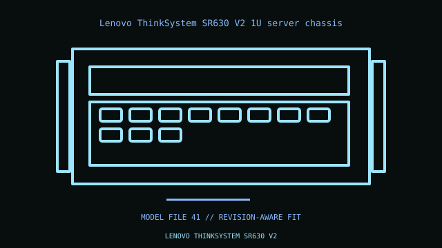

[ IDENTIFIED ENCLOSURE // RACK SERVER ENCLOSURES ]
Lenovo ThinkSystem SR630 V2 1U server chassis
1U; 43 × 434 × 750 mm H×W×D excluding bezel/handles. Proprietary dual-socket V2 board, RAID/backplane, fans and V2-specific risers/rails.

VARIANT / ARCHIVAL CAVEAT: Not SR630 V3 or original SR630. Backplane, SAS/SATA/NVMe and riser options depend on machine type; match FRU and label.
Mechanical specifications and fit
| Catalog identity / revision | Lenovo ThinkSystem SR630 V2 1U server chassis |
|---|---|
| Dimensions / construction | 1U; 43 × 434 × 750 mm H×W×D excluding bezel/handles. |
| Drive bays / storage | Front SFF hot-swap backplanes up to 10 × 2.5-inch; rear drive/M.2 boot are optional. |
| Board, system and compatibility | Proprietary dual-socket V2 board, RAID/backplane, fans and V2-specific risers/rails. |
| Revision / service note | Not SR630 V3 or original SR630. Backplane, SAS/SATA/NVMe and riser options depend on machine type; match FRU and label. |
Preservation and installation notes
Match the chassis PID/service tag to the backplane, drive carriers, risers, fan modules, PSU units and rail kit; same-family servers often have incompatible option cages.
- Photograph the complete model label, assembly revision and option identifiers before opening; keep matching covers, brackets, shields, trays and fasteners together.
- Confirm rack depth, rail travel, cable-management clearance and host/HBA support before installation; hot-swap bay count alone does not identify backplane compatibility.
Manufacturer manuals and model-specific sources
- Lenovo ThinkSystem SR630 V2 1U server chassis manufacturer specifications / product referenceModel-specific manufacturer specification, owner/service manual or technical reference; verify exact model and revision.
- Lenovo ThinkSystem SR630 V2 1U server chassis manual and service documentationModel-specific manufacturer specification, owner/service manual or technical reference; verify exact model and revision.
Where normalized dimensions or option-specific limits are not published, the record states that limitation rather than asserting a generic fit. Verify the cited manual revision against the specimen.